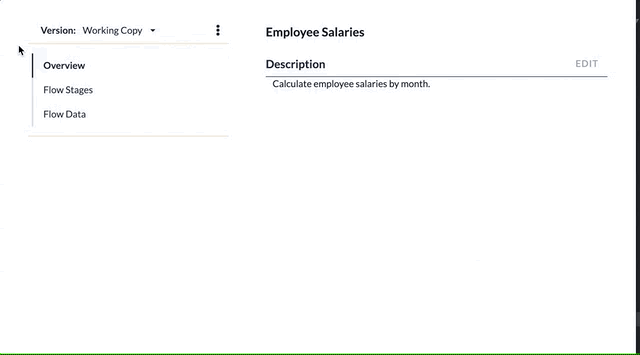

Create a Working Table
Working Tables are defined within a Flow. Select the Data section and click New Working Table. Give the table a name and optionally a description. You can then begin to define the table's columns.
See also: About Working Tables, Configure a Working Table